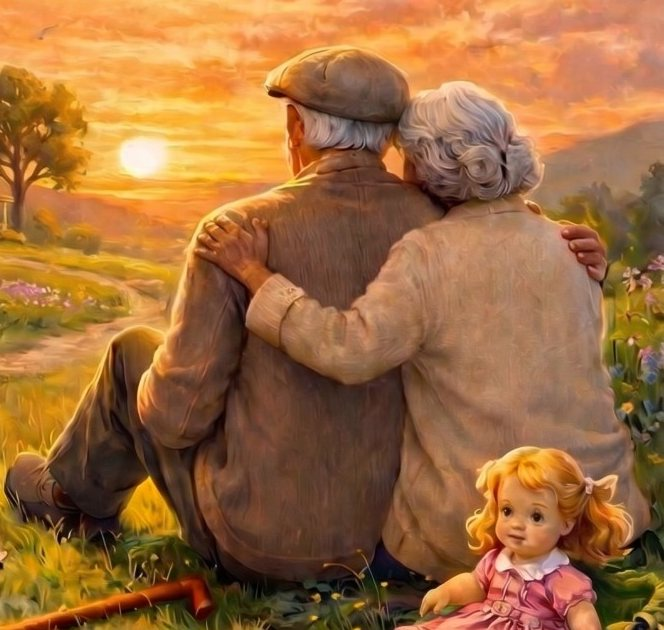

Nuestra misión
Acompañar a las personas mayores con respeto, cariño y atención profesional, en un hogar donde puedan jugar, recordar y sentirse seguras cada día.
Casa Trompo nació de una idea simple: quien ha vivido tanto merece volver a sentir la calidez, el juego y la seguridad de la infancia.
Por eso no tenemos pasillos fríos ni horarios de institución. Tenemos una casa, un jardín y tiempo para escuchar. Cada residente decide cómo quiere pasar su tarde, y alguien siempre está cerca para acompañarlo.
aquí nadie se queda esperando: todos vuelven a casa

Acompañar a las personas mayores con respeto, cariño y atención profesional, en un hogar donde puedan jugar, recordar y sentirse seguras cada día.
Ser el hogar de campo de referencia en la región por su trato humano: un lugar donde las familias encuentran tranquilidad y los residentes encuentran alegría.
Seis valores que se notan en los gestos pequeños de cada día.
Un gesto amable antes que cualquier protocolo.
Cada historia de vida se escucha y se honra.
Recordar también es una forma de cuidar.
El juego no es solo cosa de niños.
Cuidado atento, de día y de noche, sin perder la calidez.
Aire limpio, sombra de árboles y un atardecer cada tarde.
Un recorrido por la casa, las habitaciones y los jardines.


Personas con vocación que llegan cada mañana a casa, no a una institución.
Directora de la casa
“Me gusta saber cómo amaneció cada uno.”
Cuidador de día
“Una buena conversación cura más de lo que parece.”
Talleres de memoria y juego
“El trompo nunca se olvida cómo girar.”
Cocina de la casa
“Cocino lo que cocinaba su mamá.”
La mejor forma de entender Casa Trompo es recorrerla. Coordinamos la visita a la hora que te quede mejor.